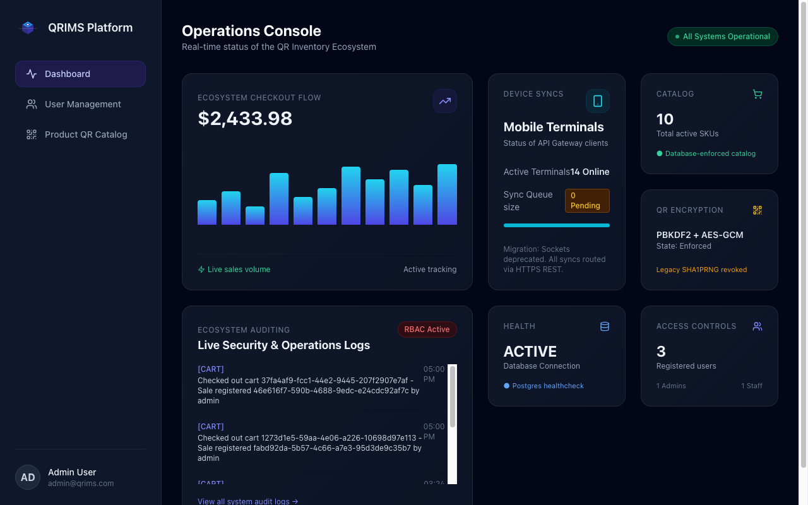
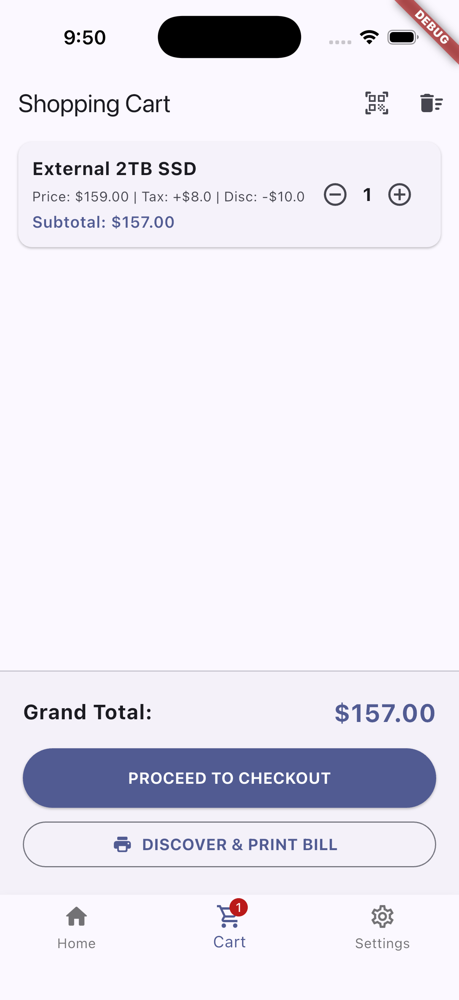

A premium, real-time administrative platform combining high-performance NestJS backend microservices, Next.js dashboard consoles, and secure Flutter mobile terminals.

A powerful admin console for operations teams and a clean Flutter app for store staff — working together in real time.

A unified stack built with state-of-the-art tools for robust real-time product catalogs and operations audits.
Built with modular NestJS architecture, fully typed TS compiler checks, and database-agnostic Prisma ORM. Serves sub-millisecond REST and GraphQL endpoints with global caching.
In-memory cache layers dramatically lower database load and keep live telemetry response times under 15ms.
Beautiful client console featuring lightning-fast Server Components, static page optimization, and a highly responsive Tailwind CSS layout.
Cross-platform mobile client with hardware QR code scanning integration. Out-of-the-box local storage SQLite syncing that pushes queue events back to backend microservices seamlessly.
Stay on top of system state with built-in RBAC auditing. Every database sync, authorization state update, and device check-in is logged automatically.
The entire ecosystem compiles into modular production-grade Docker containers, linking services securely under dedicated bridge networks.
Get started with our lightweight, performant, and fully dockerized stack today.